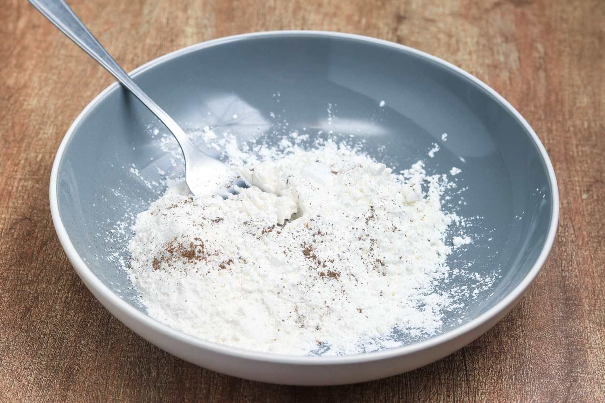
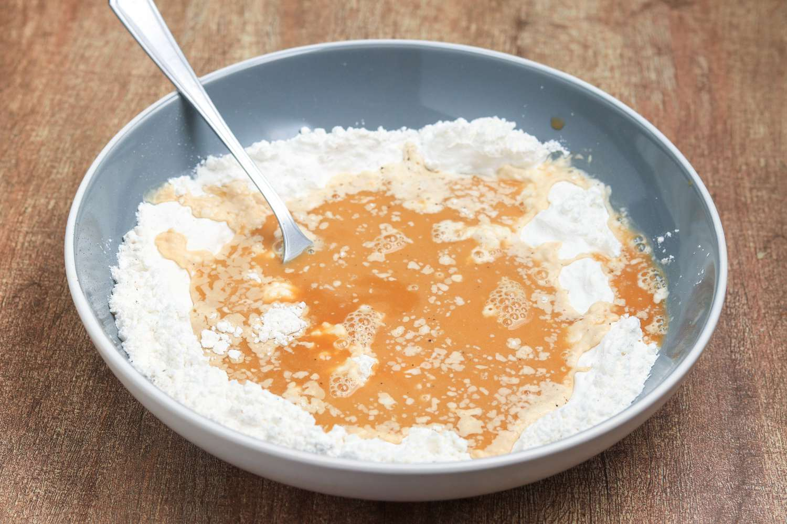
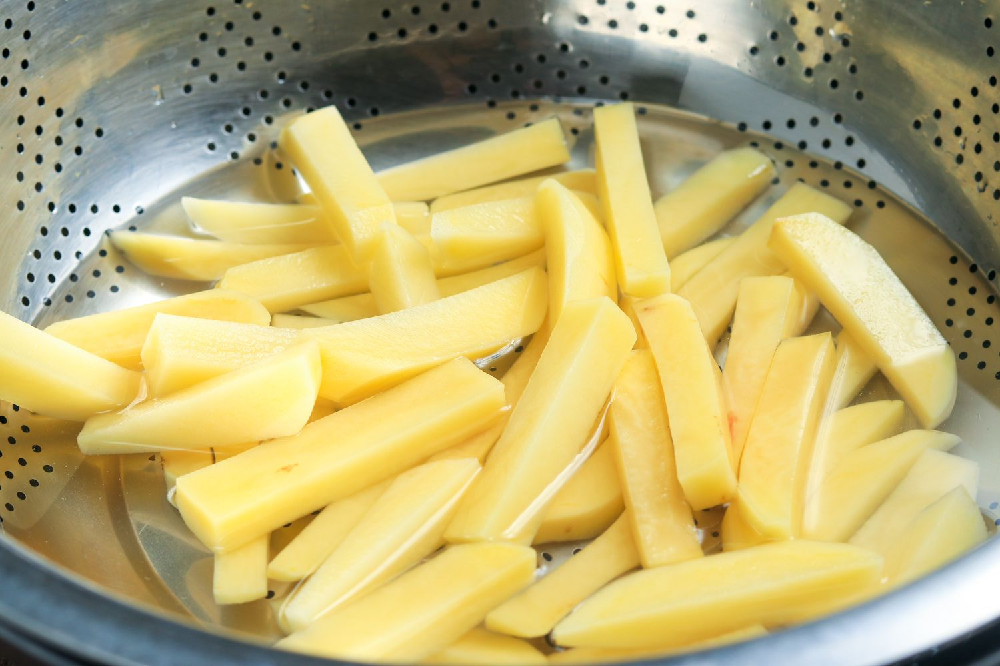
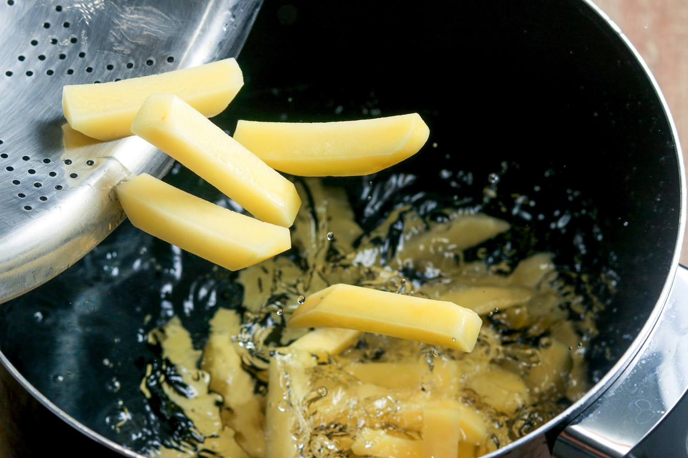
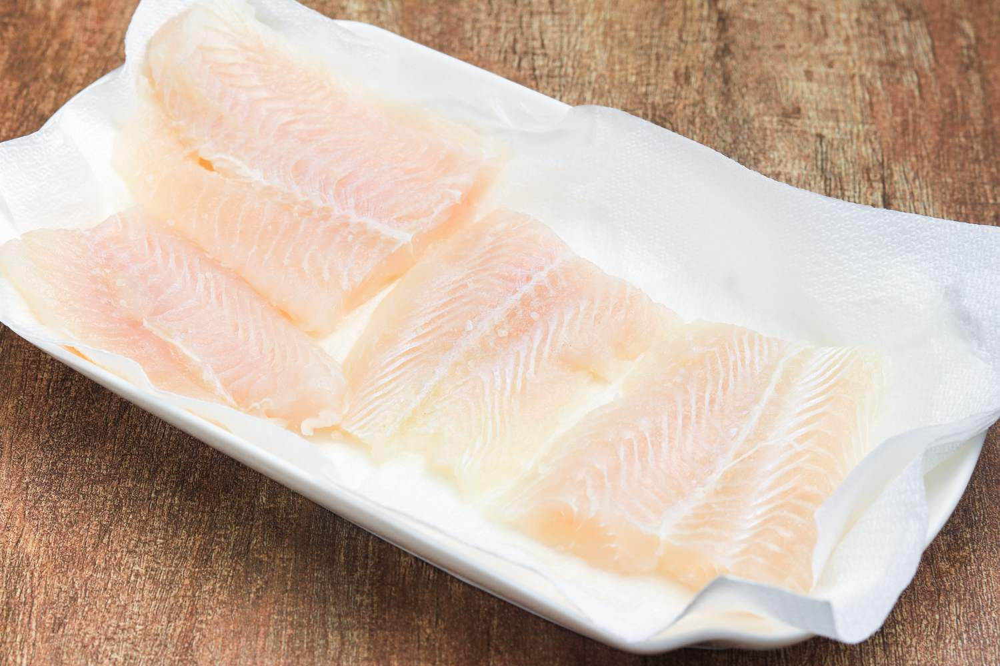
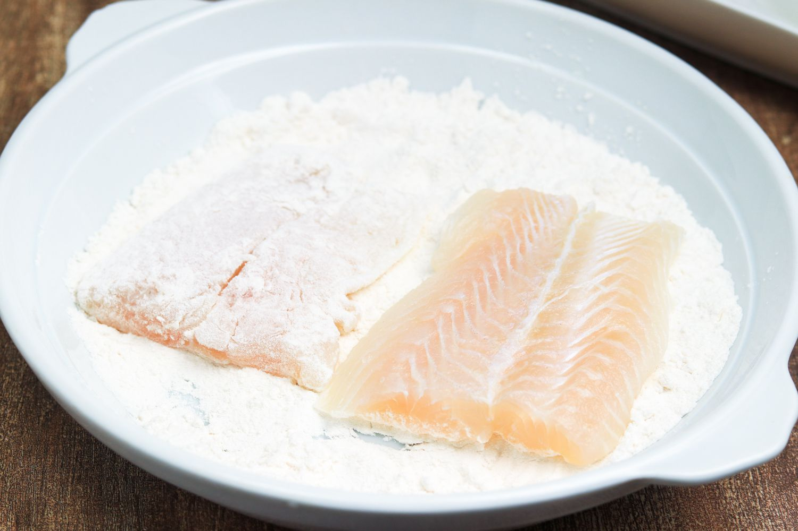
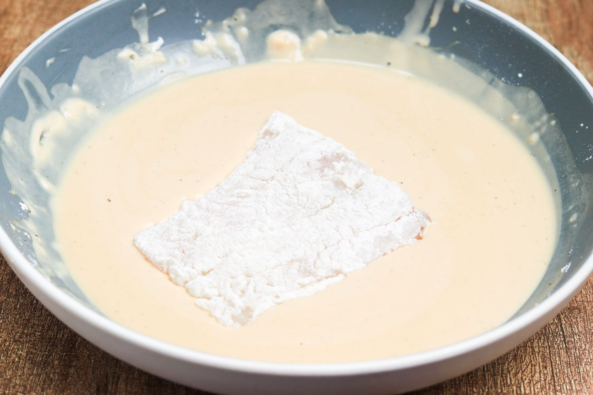
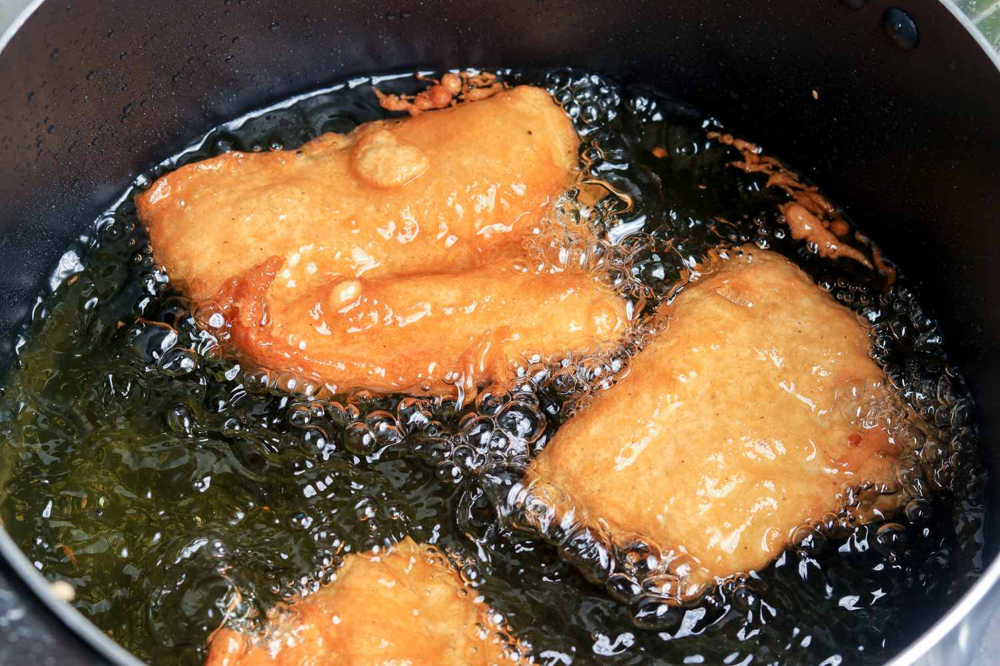

Classic British Fish and Chips
Classic fish and chips are a British institution and a national dish that everyone can't help but love. You can buy them from one of the thousands of fish and chip shops all over the country, including the world-famous Harry Ramsden's—or you can make them at home.
Use a thick white fish for this recipe; sustainable cod, haddock, or pollock are preferable. The fillets are dipped in a flour batter that includes both dark beer and sparkling water, and the carbonation ensures a light, crispy fried fish. The "chips" are simply freshly cut fried potatoes. Use one pot to fry the chips, then the fish, then the chips again (for that crisp exterior and fluffy interior) to ensure both fish and chips are ready to eat at the same time. Serve with a pint and bring the pub home.

| Ingredients | |
|---|---|
| - | 7 tablespoons (55 grams) all-purpose flour, divided |
| - | 7 tablespoons (55 grams) cornstarch |
| - | 1 teaspoon baking powder |
| - | Sea salt, to taste |
| - | 1 pinch freshly ground black pepper, to taste |
| - | 1/3 cup dark beer, cold |
| - | 1/3 cup sparkling water, cold |
| - | 4 (7-ounce) fish fillets (thick, white fish) |
| For the Chips: | |
|---|---|
| - | 2 pounds potatoes, peeled |
| - | 1 quart (1 liter) vegetable oil , or lard, for frying |
| Steps to Make It | |
|---|---|
| 1 | Gather the ingredients.

|
| 2 | Set aside 2 tablespoons of flour. In a large, root bowl, mix the remaining flour with the cornstarch and baking powder.
Season lightly with a tiny pinch of salt and pepper.
 |
| 3 | Using a fork to whisk continuously, add the beer and the sparkling water to the flour mixture and continue mixing until you have a thick, smooth batter. Place the batter in the fridge to rest for between 30 minutes and 1 hour.
 |
| 4 | Meanwhile, cut the potatoes into 1-centimeter slices (a little less than 1/2 inch), then slice these into 1-centimeter-wide chips. Place the chips into a colander and rinse under cold running water.  | 5 | Place the washed chips into a pan of cold water. Bring to a gentle boil and simmer for 3 to 4 minutes.  | 6 | Meanwhile, lay the fish fillets on a paper towel and pat dry. Season lightly with a little sea salt  | 7 | Place the 2 tablespoons of flour reserved from the batter mix into a shallow bowl. Toss each fish fillet in the flour and shake off any excess
 | 8 | Dip into the batter, coating the entire fillet.
 | 9 | Check that the oil temperature is still 350 F. Carefully lower each fillet into the hot oil. Fry for approximately 8 minutes, or until the batter is crisp and golden, turning the fillets from time to time with a large slotted spoon.
 |